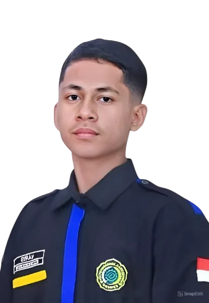

Web Developer Fullstack
Halo, saya Haris. Saya membangun aplikasi web dan mobile yang dipakai
langsung oleh penggunanya.

Saya membangun sistem digitalisasi untuk UKM Media Creative Informations: website dan dashboard pengurus dengan Laravel, aplikasi mobile anggota dengan React Native, serta chatbot AI berbasis RAG. Sistemnya sudah dipakai langsung oleh anggota UKM, dan saya sendiri yang men-deploy-nya di server lab kampus dengan aaPanel dan Cloudflare Tunnel. Saya terbiasa memakai Git/GitHub dan pernah magang sebagai web developer di Kominfo Papua Barat Daya.
Saya membangun antarmuka web yang responsif dengan HTML, CSS, JavaScript, React, Tailwind CSS, dan Bootstrap, lalu menghubungkannya ke backend Laravel, CodeIgniter, atau Node.js/Express dengan database MySQL.
Selain web, saya mengembangkan aplikasi mobile dengan React Native dan mengintegrasikan chatbot AI berbasis RAG. Saya juga bisa melakukan hosting dan deployment di shared hosting/cPanel, VPS, maupun server mandiri dengan aaPanel dan Cloudflare Tunnel.
Intern Web Developer
Juni 2025 - Agustus 2025Membangun sistem e-arsip untuk instansi dari awal menggunakan Laravel 12 dan Filament v4 (TALL Stack) agar CRUD dan antarmukanya reaktif. Saya merancang basis data relasional untuk siklus surat, mengoptimalkan kueri pencarian arsip, dan membuat pelacakan status dokumen secara realtime dengan kontrol akses (otorisasi) yang ketat untuk menjaga integritas data instansi.
Sistem Digitalisasi UKM
Membangun website publik, dashboard pengurus (absensi, keuangan, pemilihan ketua, rekrutmen, materi, program kerja, dan konten), serta aplikasi mobile anggota (seleksi soal per divisi, absensi, pemilihan ketua, tagihan kas, materi, dan ID card). Sistem ini sudah dipakai secara aktif oleh anggota UKM.
Aplikasi Kasir Cafe (Offline)
Membangun aplikasi kasir yang berjalan secara offline untuk menyelesaikan kebutuhan operasional di Roemah Kopi. Fitur mencakup pengelolaan produk dan kategori, pemesanan termasuk dine-in, nota yang bisa dikustomisasi dan dicetak lewat printer Bluetooth, serta rekapan transaksi.

Setiap baris kode adalah satu langkah kecil menuju sistem yang benar-benar berguna bagi penggunanya.
S1 Teknik Informatika
2022 - 2026Mempelajari pengembangan perangkat lunak, basis data, dan jaringan, lalu menerapkannya lewat proyek sistem digitalisasi UKM yang kini dipakai secara aktif.
PMM Mandiri
2024Mengikuti Pertukaran Mahasiswa Merdeka Mandiri di Universitas Ahmad Dahlan adalah pengalaman yang menantang sekaligus menyenangkan. Saya mempelajari banyak hal dan lingkungan baru.
Rekayasa Perangkat Lunak
2019 - 2022Mempelajari dasar-dasar pemrograman dan pengembangan perangkat lunak yang menjadi fondasi untuk melanjutkan ke bidang web development.
Saya web developer fullstack yang sedang mencari kesempatan magang di tim engineering. Silakan kirim pesan, atau lihat kode proyek saya di GitHub dan keseharian saya di Instagram.